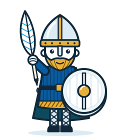
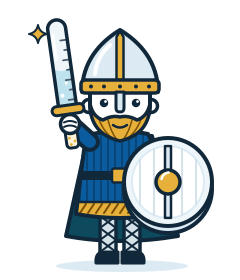

Un Normand au casque à nasal, avec un bouclier rond qui est un comprimé sécable vu de dessus. Sous chaque esquisse : la petite taille prévue à côté du bouton « Déclarer ».







Que veulent dire « fréquent » et « rare » ?
Les mots de fréquence de la notice et du RCP.
Anti-inflammatoires (AINS)
Ce qu'il faut savoir avant d'en prendre.
Les chiffres de la région
Les déclarations reçues en Normandie.
Écraser ou couper un comprimé ?
Ce qui se coupe, ce qui ne s'écrase pas.
L'équipe de Caen
Qui répond à vos questions.
Cas marquants normands
Des effets graves, racontés pour en tirer les leçons.

